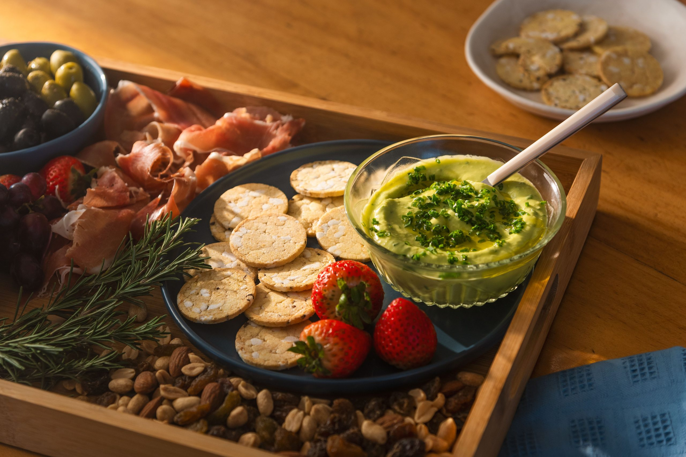

Receta Tabla de Picada

Descripción
Una tabla de picada es una presentación de alimentos en una tabla o bandeja, diseñada para ser compartida como aperitivo o refrigerio. Normalmente incluye una variedad de embutidos, quesos, fiambres, aceitunas, panificados y snacks. La tabla de picada es una opción popular para fiestas, reuniones o simplemente para disfrutar un buen aperitivo en casa.
Ingredientes
Para la Salsa
- 1 palta
- 1/4 taza de bebida vegetal
- 1/2 cdta. ajo polvo
- 4 cdas. de aceite de oliva
- 1 cda. de mostaza
- Ciboulette picado
- Sal y pimienta
Para la Picada
- Aceitunas sevillanas
- Aceitunas Huasco
- Jamón serrano bodega
- 1 caja de galletas snack multigrano
- Uvas
- Frutillas
- Mix frutos secos
Preparación
Pasos
- En una procesadora de alimentos vierte una palta pelada y sin cuesco, 1 cda. de mostaza, 1/2 cdta. de ajo en polvo, 1/4 taza de bebida vegetal, 4 cdas. de aceite de oliva, sal y pimienta. Procesa hasta homogenizar todos los ingredientes. Agrega ciboulette picado y revuelve con una cuchara. Reserva.
- Monta la tabla con los ingredientes: 1 bolsa de aceitunas sevillanas, 1 bolsa de aceitunas huasco, 1 sachet de jamón serrano Selección, 1 caja de galletas snack multigrano Selección, uvas, frutillas y mix de frutos secos a gusto.
- Monta la salsa de palta en la tabla y disfruta.
¡Listo! a disfrutar.
Pagina Principal